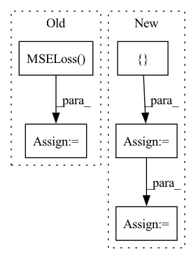

Pattern ID :30453

Before Change
train_dataset = torch.utils.data.TensorDataset(x_seq, target_seq)
train_loader = torch.utils.data.DataLoader(train_dataset, batch_size=batch_size, shuffle=shuffle)
criterion = torch.nn.MSELoss().to(device)
for batch_data in train_loader:
encoder_inputs, labels = batch_data
outputs = model(encoder_inputs, edge_index)
After Change
T = len_input
x_seq = torch.zeros([batch_size,node_count, node_features,T]).to(device)
target_seq = torch.zeros([batch_size,node_count,T]).to(device)
edge_index_seq = []
for b in range(batch_size):
for t in range(T):
x, edge_index = create_mock_data(node_count, edge_per_node, node_features)
x_seq[b,:,:,t] = x
if b == 0:
edge_index_seq.append(edge_index)
target = create_mock_target(node_count, num_classes)
target_seq[b,:,t] = target
shuffle = True
train_dataset = torch.utils.data.TensorDataset(x_seq, target_seq)
train_loader = torch.utils.data.DataLoader(train_dataset, batch_size=batch_size, shuffle=shuffle)
for batch_data in train_loader:
encoder_inputs, _ = batch_data
outputs1 = model(encoder_inputs, edge_index_seq)
outputs2 = model(encoder_inputs, edge_index_seq[0])
assert outputs1.shape == (batch_size, node_count, num_for_predict)
assert outputs2.shape == (batch_size, node_count, num_for_predict)
In pattern: SUPERPATTERN
Frequency: 3
Non-data size: 5
Instances
Fragment ID: 90082318
Project Name: benedekrozemberczki/pytorch_geometric_temporal
Commit Name: 8efa512ff3ac06546a082de036a85428720abd7a
Time: 2021-03-20
Author: He_YX@outlook.com
File Name: test/convolutional_test.py
M Class Name: AnonimousClass
N Class Name: AnonimousClass
M Method Name: test_mstgcn(0)
N Method Name: test_mstgcn(0)
M Parent Class:
N Parent Class:
M File Name: test/convolutional_test.py
N File Name: test/convolutional_test.py
M Start Line: 291
M End Line: 328
N Start Line: 293
N End Line: 311
'>
Before Change
model.eval().to(DEVICE)
dataset = IntentTransformerDataset(dataset_nums, img_transform = transforms.ToTensor())
dataloader = DataLoader(dataset, batch_size=32, num_workers=12)
loss_fn = nn.MSELoss()
validation_loss = validation_loop(model, loss_fn, dataloader, DEVICE)
print(f"Average Validation Loss Across Batches:\n{validation_loss}")
After Change
def main():
MODEL_PATH = "models\checkpoint.pt"
DEVICE = "cuda" if torch.cuda.is_available() else "cpu"
config={
"dim_model" : 64 ,
"num_heads" : 8 ,
"dropout" : 0.0 ,
"num_encoder_layers" : 4 ,
"num_decoder_layers" : 4 ,
"d_hidden" : 256 ,
"num_conv_layers" : 2 ,
"opt" : "SGD",
"lr" : 1e-4 ,
"loss" : "L1"
}
dataset_nums = ["../data/DJI_0012"]
model = TrajectoryPredictorWithIntentV2(config)
model_state = torch.load(MODEL_PATH, map_location=DEVICE)
model.load_state_dict(model_state)
model.eval().to(DEVICE)
'>
Fragment ID: 90082316
Project Name: xushenlz/parksim
Commit Name: e5109de3359e877abeb803416de7cf18fd143193
Time: 2022-04-14
Author: lacayomatt@gmail.com
File Name: python/parksim/trajectory_predict/intent_transformer/evaluate.py
M Class Name: AnonimousClass
N Class Name: AnonimousClass
M Method Name: main(0)
N Method Name: main(0)
M Parent Class:
N Parent Class:
M File Name: python/parksim/trajectory_predict/intent_transformer/evaluate.py
N File Name: python/parksim/trajectory_predict/intent_transformer/evaluate.py
M Start Line: 32
M End Line: 38
N Start Line: 29
N End Line: 48
'>
Before Change
train_dataset = torch.utils.data.TensorDataset(x_seq, target_seq)
train_loader = torch.utils.data.DataLoader(train_dataset, batch_size=batch_size, shuffle=shuffle)
criterion = torch.nn.MSELoss().to(device)
for batch_data in train_loader:
encoder_inputs, labels = batch_data
outputs = model(encoder_inputs, edge_index)
After Change
T = len_input
x_seq = torch.zeros([batch_size,node_count, node_features,T]).to(device)
target_seq = torch.zeros([batch_size,node_count,T]).to(device)
edge_index_seq = []
for b in range(batch_size):
for t in range(T):
x, edge_index = create_mock_data(node_count, edge_per_node, node_features)
x_seq[b,:,:,t] = x
if b == 0:
edge_index_seq.append(edge_index)
target = create_mock_target(node_count, num_classes)
target_seq[b,:,t] = target
shuffle = True
train_dataset = torch.utils.data.TensorDataset(x_seq, target_seq)
train_loader = torch.utils.data.DataLoader(train_dataset, batch_size=batch_size, shuffle=shuffle)
for batch_data in train_loader:
encoder_inputs, _ = batch_data
outputs1 = model(encoder_inputs, edge_index_seq)
outputs2 = model(encoder_inputs, edge_index_seq[0])
assert outputs1.shape == (batch_size, node_count, num_for_predict)
assert outputs2.shape == (batch_size, node_count, num_for_predict)
'>
Fragment ID: 90082314
Project Name: benedekrozemberczki/pytorch_geometric_temporal
Commit Name: 8efa512ff3ac06546a082de036a85428720abd7a
Time: 2021-03-20
Author: He_YX@outlook.com
File Name: test/convolutional_test.py
M Class Name: AnonimousClass
N Class Name: AnonimousClass
M Method Name: test_astgcn(0)
N Method Name: test_astgcn(0)
M Parent Class:
N Parent Class:
M File Name: test/convolutional_test.py
N File Name: test/convolutional_test.py
M Start Line: 248
M End Line: 285
N Start Line: 236
N End Line: 266